install.packages(c("lme4", "broom.mixed", "ggh4x", "marginaleffects"))Panel Data
Slides
Set up
You will need to install the following new packages:
Then load them and some other friends into your session:
library(tidyverse)
library(wbstats)
library(countrycode)
library(modelsummary)
library(ggh4x)
library(lme4)
library(broom)
library(broom.mixed)
library(ggdist)
library(marginaleffects)
set.seed(333)Introducing panel data
A lot of political science research (especially in international relations and comparative politics) attempts to resolve questions that deal with many actors’ behavior over time. These data have dependencies between them: a country’s GDP this year is, in part, the product of its GDP last year; whether or not a country is at war this year is going to be influenced by whether or not it was at war last year; individuals’ votes in this year’s US Presidential Election will be shaped by who they voted for in the last election.
These types of data go by many names, but are often referred to as panel data or time-series cross sectional (TSCS) data. You can get a much richer picture of the patterns that exist within your population of interest by looking at how those patterns form and change over time. However, there is no such thing as a free lunch. Adding time and hierarchy to your analysis adds complexity. This week, I will introduce you to this complexity in (what I hope is) a digestible way.
Note
We will focus on country-panel data (i.e. Australia in 2022, Australia in 2023, Australia in 2024) but this logic and these methods can be applied to almost any panel data.
Relationship between health and wealth
Today we are going to explore a familiar question in a new way. What is the relationship between health and wealth? Previously, we used data from only one year to find that, on average, as a country’s GDP per capita increases, so too does the average life expectancy of its citizens. We are going to extend this analysis to explore this trend over time and between countries. We will identify whether this positive relationship is consistent across all years between 2000 and 2020, and between all countries in the world.
First, we will collect data on each country’s GDP per capita from 2000:
gdp_df <- wb_data("NY.GDP.PCAP.CD", start_date = 2000, end_date = 2020, return_wide = F) |>
transmute(iso3c, country, year = date, gdp_per_cap = value)Next, we will collect data on countries’ average life expectancy over this same time period:
life_exp_df <- wb_data("SP.DYN.LE00.IN", start_date = 2000, end_date = 2020, return_wide = F) |>
select(iso3c, country, year = date, life_exp = value)Then we can build our data set:
full_df <- gdp_df |>
left_join(life_exp_df, by = join_by(iso3c, country, year)) |>
mutate(region = countrycode(country, "country.name", "region"),
year = year - 2000) |>
relocate(region, .after = country)
full_df# A tibble: 4,557 × 6
iso3c country region year gdp_per_cap life_exp
<chr> <chr> <chr> <dbl> <dbl> <dbl>
1 AFG Afghanistan South Asia 20 512. 62.6
2 AFG Afghanistan South Asia 19 498. 63.6
3 AFG Afghanistan South Asia 18 492. 63.1
4 AFG Afghanistan South Asia 17 526. 63.0
5 AFG Afghanistan South Asia 16 523. 63.1
6 AFG Afghanistan South Asia 15 567. 62.7
7 AFG Afghanistan South Asia 14 627. 62.5
8 AFG Afghanistan South Asia 13 639. 62.4
9 AFG Afghanistan South Asia 12 653. 61.9
10 AFG Afghanistan South Asia 11 609. 61.4
# ℹ 4,547 more rows
Note
I am baselining the years (0 represents 2000, 1 represents 2001, etc.). This will give us a meaningful intercept.
Now we have data on all 217 countries’ GDP per capita and life expectancy across 20 years. Therefore, our observations are clustered by country (we have 20 observations per country). These countries are, themselves, clustered within 7 regions.
Why are we doing this?
Before we dive into some of the additional work you will need to do when working with time-series data, I should answer a very valid question: “why on earth are we doing this?”. In other words, what problem are we solving?
There are two answers to this question. First, the goal of your analysis is to undercover a general relationship between your outcome of interest and all of the things you theorize to be important drivers of that outcome of interest. You use this empirical analysis to provide evidence of that theorized relationship occurring out in the wild. When your theory applies to actors’ behavior over time, you should aim to demonstrate this to be the case. You should use time-series data.
Second, once you have decided to provide this evidence of your theory over time, your statistical tools need to also adapt. Your observations are no longer independent of each other. You are observing behavior by the same actor over time (i.e. Australia’s trade with the US in 2020, in 2021, in 2022, etc.). The actor’s behavior in the year prior influences their behavior in the current year. For example, US consumers that have established links with Australian manufacturers have to decide to change to a new manufacturer from another country (expending some amount of effort), or continue to buy products from that Australian manufacturer this year. Either way, the fact that they traded with Australia in the year prior impacts their behavior this year. Contrast this with our previous set ups. For example, we have use the National Election Survey to looked at the US public’s opinions on various things. These individuals are selected at random. They are strangers to one another. It is appropriate to assume that they do not influence each other’s opinions or responses to the survey. We discussed this assumption of independence of errors at length in the model specification week. If we violate this assumption (which we most certainly do when dealing with the same observation over time), we need to adjust our statistical model or tool accordingly. So, let’s get to it.
Starting simple
To get a better sense of why we need to think seriously about time in our analyses, we will start by looking only at each country’s average life expectancy. We will explore the relationship between this and GDP per capita later.
We know that, generally speaking, people are increasingly living longer:
ggplot(full_df, aes(x = (year + 2000), y = life_exp, group = country)) +
geom_line(alpha = 0.25) +
theme_minimal() +
theme(panel.grid = element_blank()) +
labs(x = "Year",
y = "Average Life Expectancy (in years)")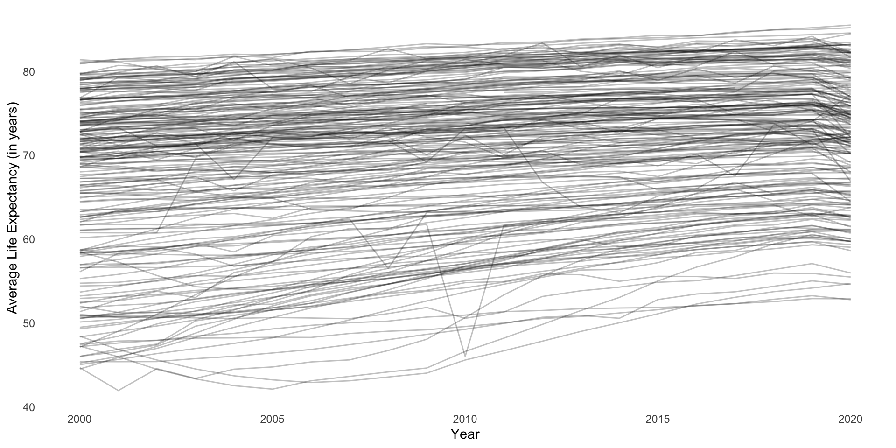
A useful summary of these data is the global average life expectancy over time:
full_df |>
group_by(year) |>
summarise(life_exp = mean(life_exp, na.rm = T)) |>
ggplot(aes(x = (year + 2000), y = life_exp)) +
geom_line() +
theme_minimal() +
theme(panel.grid = element_blank()) +
labs(x = "Year",
y = "Average Life Expectancy (in years)")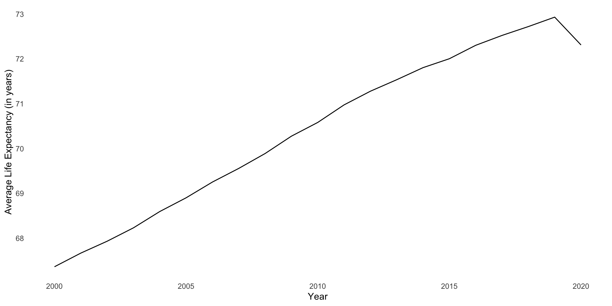
This growth is linear and positive (except for that drop off in 2020)! Therefore, we can model it over time using our good friend linear regression:
m <- lm(life_exp ~ year, data = full_df)
modelsummary(m, coef_rename = c(year = "Year"))| (1) | |
|---|---|
| (Intercept) | 67.516 |
| (0.253) | |
| Year | 0.289 |
| (0.022) | |
| Num.Obs. | 4409 |
| R2 | 0.039 |
| R2 Adj. | 0.039 |
| AIC | 31593.5 |
| BIC | 31612.6 |
| Log.Lik. | −15793.726 |
| F | 178.675 |
| RMSE | 8.70 |
This model tells us that, in 2000 (when year = 0), the average life expectancy across countries globally was 67.52 years. This global average increases by an average of 0.29 years (or 3.5 months) every year thereafter.
To put this in familiar terms, we have fit the following model:
\[ Average\ life\ expectancy = \beta_0 + \beta_1 Year + \epsilon \]
Accounting for the structure of our data
This model accounts for time in a very straightforward and direct way. However, it ignores the structure of the data: it does not account for regional- or country-specific trends buried within. We lose a lot of interesting information when we summarize our data in this way.
To illustrate, let’s take a look at how our model performs at the country-level. I will randomly select two countries from every region to illustrate.
countries <- full_df |>
group_by(region) |>
sample_n(2) |>
pull(country)What average life expectancy does our very simple model predict for these countries across our time period?
augment(m, newdata = full_df) |>
filter(country %in% countries) |>
ggplot(aes(x = year)) +
geom_point(aes(y = life_exp)) +
geom_line(aes(y = .fitted)) +
facet_nested_wrap(~ region + country) +
theme_minimal()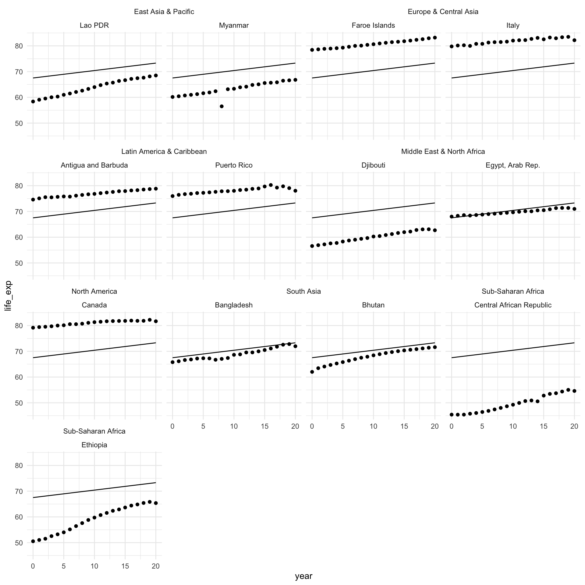
As expected, the model predicts the same average life expectancy for every country in every region, despite clear differences between them. For example, countries in North America have a much higher average life expectancy than countries in Sub-Saharan Africa. It would be great if we could account for some of these differences. What if we could customize this starting point (the intercept) for each region? In other words, what if the starting point for our model was the average life expectancy in each region, instead of the global average?
Region-level intercepts
Let’s ask our model to adjust its starting point to the average life expectancy in countries within the same region. We can do that by including each country’s region as a variable in our model:
m_region <- lm(life_exp ~ year + region, data = full_df)
modelsummary(m_region, coef_rename = c(year = "Year"))| (1) | |
|---|---|
| (Intercept) | 69.191 |
| (0.238) | |
| Year | 0.290 |
| (0.013) | |
| regionEurope & Central Asia | 4.174 |
| (0.252) | |
| regionLatin America & Caribbean | 1.392 |
| (0.269) | |
| regionMiddle East & North Africa | 1.595 |
| (0.321) | |
| regionNorth America | 7.610 |
| (0.697) | |
| regionSouth Asia | −3.961 |
| (0.455) | |
| regionSub-Saharan Africa | −13.840 |
| (0.259) | |
| Num.Obs. | 4409 |
| R2 | 0.643 |
| R2 Adj. | 0.643 |
| AIC | 27236.2 |
| BIC | 27293.7 |
| Log.Lik. | −13609.087 |
| F | 1133.649 |
| RMSE | 5.30 |
In 2000 (our baseline year, where year = 0), the estimated average life expectancy among countries in East Asia and the Pacific (our baseline region) was 69.19 years. All regions other than South Asia and Sub-Saharan Africa had a higher average life expectancy than East Asia and the Pacific in 2000. North America had the highest average life expectancy with 76.8 years.
Note
Remember, the intercept represents the predicted average life expectancy when all of our variables are equal to zero. When we have a categorical variable, we hold one category out as a baseline. The coefficients on the other categories are the predicted average change in the outcome relative to this baseline category.
Let’s look at how our model performs across our sample of countries:
augment(m_region, newdata = full_df) |>
filter(country %in% countries) |>
ggplot(aes(x = year)) +
geom_point(aes(y = life_exp)) +
geom_line(aes(y = .fitted)) +
ggh4x::facet_nested_wrap(~ region + country) +
theme_minimal()This is better! You can see that the starting point for each country looks more realistic than the global average. It reflects the average across the region.
However, we can improve on this. Using this model, each country within the same region shares a starting point, but there can be a lot of variance within a single region. For example, look at the difference between Djibouti and Egypt. Djibouti’s average life expectancy in 2020 is below where Egypt started in 2000.
Country-level intercepts
Let’s ask our model to adjust the starting point to reflect the average life expectancy for each country in 2000:
m_country <- lm(life_exp ~ year + country, data = full_df)I won’t print the regression table for obvious reasons…
Let’s look at how our model performs after this adjustment:
augment(m_country) |>
filter(country %in% countries) |>
left_join(
distinct(full_df, country, region)
) |>
ggplot(aes(x = year)) +
geom_point(aes(y = life_exp)) +
geom_line(aes(y = .fitted)) +
ggh4x::facet_nested_wrap(~ region + country) +
theme_minimal()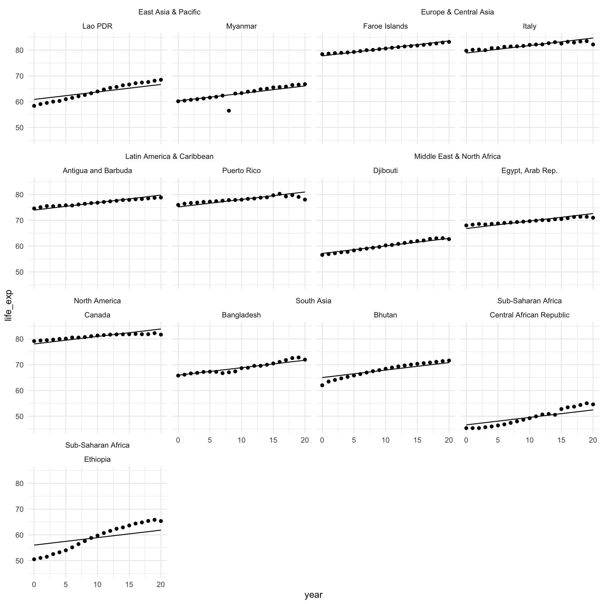
This is much better! We have a much more accurate model that accounts for what is going on at the country level.
Random effects: a brief introduction
What is going on? To start, we fit this very simple (and familiar) linear regression model:
\[ Average\ life\ expectancy = \beta_0 + \beta_1 Year + \epsilon \]
You’ll remember that we assume that the error term (\(\epsilon\)) is normally distributed, centered at zero, and has some standard deviation (\(\sigma\)). Formally, we can write this as:
\[ \epsilon \sim \mathcal{N}(0,\sigma) \]
The standard deviation for our error term in our model above is:
glance(m) |>
pull(sigma)[1] 8.701056So, we are assuming that the difference between each country’s actual average life expectancy and the average life expectancy our model predicts for that country is a random number of years pulled from this distribution:
error_m <- tibble(residual = rnorm(1e6, mean = 0, sd = glance(m)$sigma))
ggplot(error_m, aes(x = residual)) +
stat_halfeye()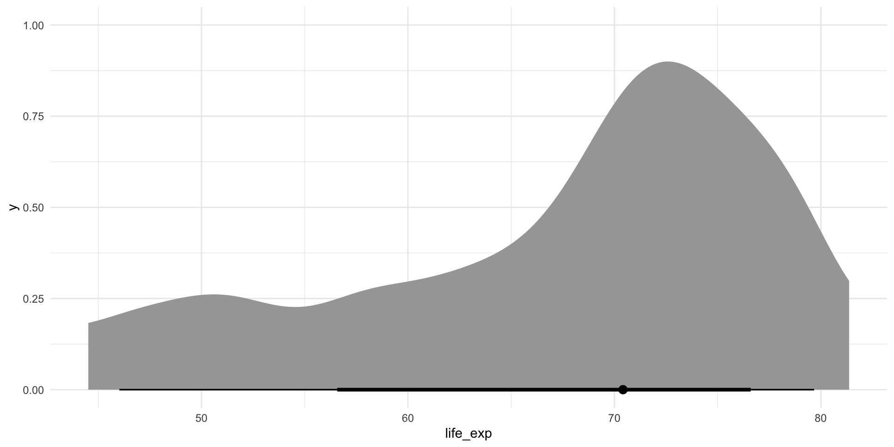
Although the average of this error is zero, it has a very wide range. Some of those residuals can be as large as 25 years! This captures all of the variance in countries’ average life expectancy not picked up by annual growth rates (our single independent variable: year).
What if we could open up all of that unexplained variance and take a good look at it?
Country-specific starting points
Let’s focus on the error around the intercept, \(\beta_0\). As we saw above, there is a lot of variation in that \(\beta_0\). It’s the average life expectancy across all countries in 2000 (our baseline year). Averages are very useful summaries, but they come at a cost of information. Let’s see what we lost:
full_df |>
filter(year == 0) |>
ggplot(aes(x = life_exp)) +
stat_halfeye() +
theme_minimal() +
labs(x = "Average life expectancy (years)",
y = NULL)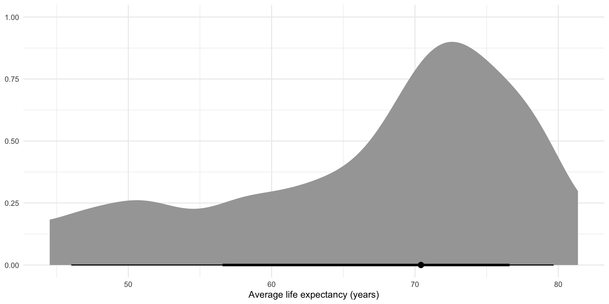
We reduced all of these values to just one summary value: the average (represented by that lonely dot). This is often very useful! Remember, the goal of statistical analysis is to learn general patterns in our data. But when your data are nested (i.e. within countries within regions), we need to be careful not to miss important factors that influence the relationship we are interested in learning about.
To illustrate, let’s assume that there are country-specific difference in the relationship between life expectancy and time. That’s why we see such a large difference between, say, Canada’s and Myanmar’s average life expectancies at any given point in time. Both countries’ populations had average life expectancies that grew each year. But they started at different, country-specific spots.
When we do not account for the nested structure of our data, we miss these differences. But that doesn’t mean they don’t exist. It just means that they are hidden from us, sitting in the error term.
Your error is too full
The error term above accounts for all of the variation in average life expectancy that is not captured by the baseline average life expectancy (captured by the intercept) and average annual growth rate across all countries (captured by the coefficient on year). This includes a whole bunch of country-specific variance (represented below as \(b_{country}\)):
\[ Average\ life\ expectancy = \beta_0 + \beta_1 Year + (b_{country} + \epsilon) \]
Now, we can (and should!) account for that \(b_{country}\).
For example, imagine that we have the following model for Australia’s average life expectancy over time:
\[ Average\ life\ expectancy_{Australia} = \beta_0 + \beta_1 Year + (b_{Australia} + \epsilon) \]
This model suggests that there is a general relationship between any country’s average life expectancy and time. This is appropriate! Generally, all countries’ average life expectancies are increasing over time. This is due to advancements in medicine and other quality of life boosters that transcend borders. However, we do not always observe a country’s average life expectancy perfectly following this relationship. There is some variance. All good and familiar so far.
Previously, we have relied on our random error term (\(\epsilon\)) to capture this variance. However, the model written above suggests that there is also a country-specific effect that serves as an additional source of variance from that global relationship. \(b_{Australia}\) captures the variance that we observe just because Australia is Australia.
More generally, we can model the following:
\[ Average\ life\ expectancy = \beta_0 + \beta_1 Year + (b_{country} + \epsilon) \]
Now, we can make some assumptions about the shape of that country-specific variance, just as we do for the other random variance. We assume that the country-specific variance from the general pattern is normally distributed, centered at zero, and has some standard deviation (\(\tau\)).
Formally, we can write this as:
\[ b_{country} \sim \mathcal{N}(0,\tau) \]
These variances from the general trend are still random. In fact, the only difference between this model and our more simple (and familiar) linear regression is this country-specific variance (\(b_{country}\)). On average, this difference is zero! But often this varies by country and that variance is, on average, \(\tau\).
Above we accounted for changes in the starting point for each country. In other words, we adjusted the intercept to reflect each country’s average life expectancy in year 0. Explicitly, we modeled the country-specific error as:
\[ Average\ life\ expectancy = \beta_0 + b_{0,country} + \beta_1 Year + \epsilon \]
Tip
Skip this if you aren’t comfy with the content so far!
We can also model the error term as:
\[ Average\ life\ expectancy = \beta_0 + \beta_1 Year + b_{1,country} + \epsilon \]
This will customize the slope of our linear regression to reflect country-specific growth rates. How cool! For example, Ethiopia’s growth rate is much larger than Canada’s. This is how we account for this difference.
Further, we can model that country-specific error as follows:
\[ Average\ life\ expectancy = \beta_0 + b_{0,country} + \beta_1 Year + b_{1,country} + \epsilon \]
Now we have a custom starting point and slope for each country! Multi-level modelling is awesome.
Why not just include a country variable as we did above?
To capture the country-specific starting points of the relationship between average life expectancy and time, we simply added the country as a variable into our model. This approach is good at capturing that different starting point, but falls down in capturing the uncertainty around those starting points.
This is because this approach is over-contextualized: it ignores what each country has in common. The multi-level modelling approach introduced above explicitly parses out what countries have in common, and how their unique quirks make them deviate from this common relationship.
Further, we often don’t have a lot of information on each observation. Here, we are fitting several regression lines using only 20 data points (one for each year observed for each country). The multi-level modelling approach allows us to build our understanding of the relationship across all available data.
However, the above approach introduces the intuition behind accounting for the structure of your data in a way I find more intuitive than the multi-level approach. You can carry that logic with you through the following explanation.
Multi-level modelling
Let’s get started modelling the general relationship and the country-specific effects. We are going to fit the following model:
\[ Average\ life\ expectancy = \beta_0 + b_{0, country} + \beta_1 Year + \epsilon \]
Tip
This is sometimes referred to as a random-intercept model because we create different starting points for each group in our data.
In R, we use the lme4::lme() function:
m_multi <- lmer(life_exp ~ year + (1 | country), data = full_df)
modelsummary(m_multi, coef_rename = c(year = "Year"))| (1) | |
|---|---|
| (Intercept) | 67.568 |
| (0.591) | |
| Year | 0.290 |
| (0.004) | |
| SD (Intercept country) | 8.584 |
| SD (Observations) | 1.503 |
| Num.Obs. | 4409 |
| R2 Marg. | 0.039 |
| R2 Cond. | 0.971 |
| AIC | 17498.1 |
| BIC | 17523.6 |
| ICC | 1.0 |
| RMSE | 1.47 |
If we look back at the results of the simple model we fit at the start, we will see very similar coefficients to those captured here. The estimated average life expectancy in 2000 across all countries globally was 67.52 years. This estimated average is increasing by an average of 0.29 years annually.
The magic is happening a little under the hood in our errors. They are reported in those two new lines: SD (Intercept country) and SD (Observations).
Our model has separated out the global relationship (not affected by country-specific factors) and the country-specific features.
The fixed effects describe the overall relationship within our data. This is similar to your standard linear regression model fit across all observations. In other words, this is the global average and global growth in average life expectancy. We can isolate these components:
tidy(m_multi, effects = "fixed")# A tibble: 2 × 5
effect term estimate std.error statistic
<chr> <chr> <dbl> <dbl> <dbl>
1 fixed (Intercept) 67.6 0.591 114.
2 fixed year 0.290 0.00374 77.6These can be interpreted exactly as we would any other linear regression coefficients.
Additionally, we have some very rich information about how this relationship differs between countries stored in the group-level effects (our group here is countries):
tidy(m_multi, effects = "ran_pars")# A tibble: 2 × 4
effect group term estimate
<chr> <chr> <chr> <dbl>
1 ran_pars country sd__(Intercept) 8.58
2 ran_pars Residual sd__Observation 1.50This gives us the estimated variance for average life expectancy across countries: 8.58. As we move from country to country, how much does the average life expectancy change on average? 8.58 years!
This difference is much larger than changes to average life expectancy associated with our main independent variable: year. In terms of substantive meaning, which country you are looking at matters more than which years you are moving between.
We also have an estimate of the remaining unexplained variation in life expectancy: 1.5 years. Together with the country-specific variance, we see that countries tend to randomly deviate from the general pattern by 10.09 years.
This is great because we have now captured the country-specific component of our error (changes in average life expectancy not captured by the global average in our baseline year and annual changes). And it’s substantial! It makes up 85% of the total error in our model.
How does our model perform?
augment(m_multi) |>
filter(country %in% countries) |>
left_join(
distinct(full_df, country, region)
) |>
ggplot(aes(x = year)) +
geom_point(aes(y = life_exp)) +
geom_line(aes(y = .fitted)) +
ggh4x::facet_nested_wrap(~ region + country) +
theme_minimal()
Looks good!
Relationship between health and wealth
Okay, so we now have a good understanding of how each country’s average life expectancy grows over time. We have accounted for both time and the nested structure of our data.
But now we want to explore a more interesting relationship: that between health and wealth. We know from previous classes that a country’s average life expectancy tends to grow with its GDP. How can we formalize that whilst accounting for differences in the relationship over time and between countries?
First, let’s look at the relationship between health and wealth across all countries and years:
ggplot(full_df, aes(x = gdp_per_cap, y = life_exp)) +
geom_point() +
theme_minimal() +
labs(x = "GDP (USD)",
y = "Average life expectancy (years)")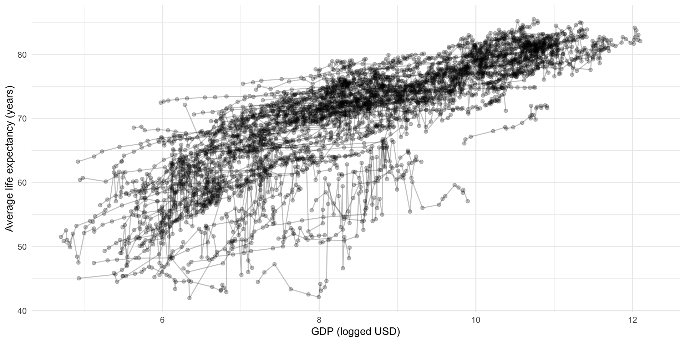
Okay, that’s certainly a positive and strong relationship but it’s not very linear. Happily, we can transform our variables to expose a more linear relationship:
full_df <- full_df |>
mutate(log_gdp = log(gdp_per_cap))
ggplot(full_df, aes(x = log_gdp, y = life_exp)) +
geom_point() +
theme_minimal() +
labs(x = "GDP (logged USD)",
y = "Average life expectancy (years)")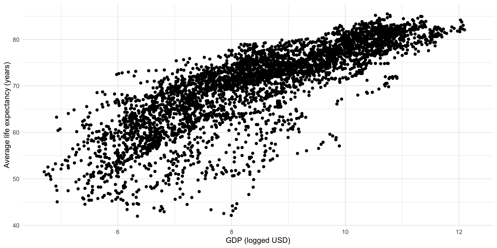
Great! We can detect a linear and positive relationship lurking in that cloud.
Suggested reading
If you want to learn more about log transformations, please read:
- Bailey, Michael A. 2020. Real Stats: Using Econometrics for Political Science and Public Policy. Chapter 7.
If you want to learn more about interpreting linear regression models that use log transformed DVs and/or IVs, please read:
Each point in this cloud represents one country’s logged GDP per capita and average life expectancy in one year. This visualization does not tell us much about that fact. Let’s adjust it:
ggplot(full_df, aes(x = log_gdp, y = life_exp, group = country)) +
geom_point(alpha = 0.25) +
geom_line(alpha = 0.25) +
theme_minimal() +
labs(x = "GDP (logged USD)",
y = "Average life expectancy (years)")Let’s isolate our sample of countries:
full_df |>
filter(country %in% countries) |>
ggplot(aes(x = log_gdp, y = life_exp)) +
geom_line() +
geom_point() +
ggh4x::facet_nested_wrap(~ region + country) +
theme_minimal() +
labs(x = "GDP per capita (logged USD)",
y = "Average life expectancy (years)")
Oh gosh. Okay, so we now have a better understanding of the structure of our data but it’s still a mess. We can see some fairly linear and positive relationships running around, but they are start and end at various different places. We will need to account for this diversity by fitting a multi-level model with country groupings.
Let’s start by running a normal linear regression. This will be a our baseline:
m_linear <- lm(life_exp ~ log_gdp + year, data = full_df)
modelsummary(m_linear,
coef_rename = c(log_gdp = "GDP per capita (US$, logged)",
year = "Year"))| (1) | |
|---|---|
| (Intercept) | 31.197 |
| (0.431) | |
| GDP per capita (US$, logged) | 4.568 |
| (0.051) | |
| Year | 0.039 |
| (0.013) | |
| Num.Obs. | 4232 |
| R2 | 0.670 |
| R2 Adj. | 0.670 |
| AIC | 25756.4 |
| BIC | 25781.8 |
| Log.Lik. | −12874.221 |
| RMSE | 5.07 |
Because we logged our variable of GDP per capita, we need to take one additional step before we can interpret the coefficient on GDP per capita in a way that is meaningful to humans. The predicted effect on a country’s average life expectancy of a $1,000 increase in its GDP per capita is 31.6 years.
How did I get this? First, I get the coefficient for a country’s logged GDP per capita:
coef_gdp_linear <- tidy(m_linear) |>
filter(term == "log_gdp") |>
pull(estimate)
coef_gdp_linear[1] 4.567743I then translate a GDP per capita increase of $1,000 into a logged GDP Per capita increase:
log(1000)[1] 6.907755I then find the predicted increase in a country’s life expectancy resulting from a $1,000 (or a 6.908 logged dollar) increase in a country’s GDP per capita, holding the yearly effects constant:
coef_gdp_linear * log(1000)[1] 31.55285Holding a country’s GDP per capita constant, this average life expectancy increases by an average of 0.04 years annually.
Our model estimates these effects across all countries. But we know each country has a slightly different relationship between health and wealth. So, we should model this difference using multilevel modelling. As above, we are going to fit different intercepts for each country.
m_multi <- lmer(life_exp ~ log_gdp + year + (1 | country),
data = full_df)
modelsummary(m_multi,
coef_rename = c(log_gdp = "GDP per capita (US$, logged)",
year = "Year"))| (1) | |
|---|---|
| (Intercept) | 56.521 |
| (0.781) | |
| GDP per capita (US$, logged) | 1.376 |
| (0.077) | |
| Year | 0.217 |
| (0.006) | |
| SD (Intercept country) | 6.945 |
| SD (Observations) | 1.459 |
| Num.Obs. | 4232 |
| R2 Marg. | 0.131 |
| R2 Cond. | 0.963 |
| AIC | 16500.3 |
| BIC | 16532.0 |
| ICC | 1.0 |
| RMSE | 1.42 |
What did we find? The model has isolated the global (population) effects. Holding annual growth constant, a country’s average life expectancy increases by an average of 9.5 years for every $1,000 increase in its GDP per capita. Holding that growth in GDP per capita constant, a country’s average life expectancy increases by an average of 0.22 years annually.
We also have the country-specific effects. We find that life expectancy varies by 6.945 years between countries. This country-level variance accounts for 83% of the total residual variation of the model. How did I get that?
\[ \frac{SD\ (Intercept\ country)}{Total\ SD} = \frac{SD\ (Intercept\ country)}{SD\ (Intercept\ country) + SD\ (Observations)} = \frac{6.945\ years}{6.945\ years + 1.459\ years} \]
Let’s look at how our model performs against our sample of countries for their GDP per capita:
augment(m_multi) |>
filter(country %in% countries) |>
left_join(
distinct(full_df, country, region)
) |>
ggplot(aes(x = log_gdp)) +
geom_point(aes(y = life_exp)) +
geom_line(aes(y = .fitted), colour = "red") +
ggh4x::facet_nested_wrap(~ region + country) +
theme_minimal() +
labs(x = "Year",
y = "Average life expectancy (years, logged)")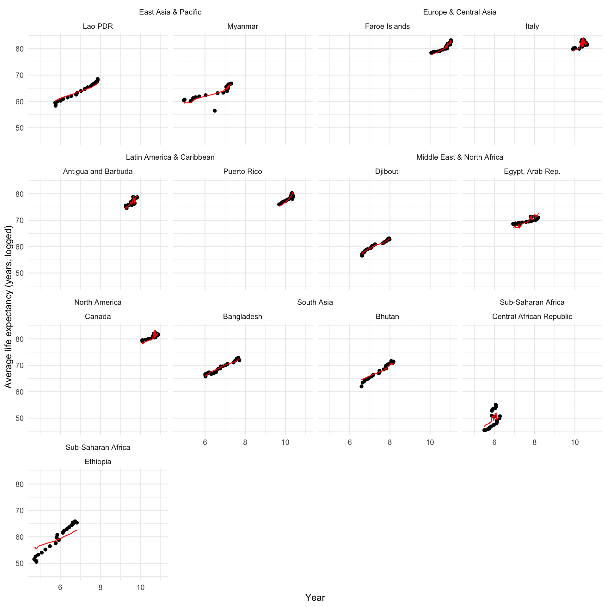
And over time:
augment(m_multi) |>
filter(country %in% countries) |>
left_join(
distinct(full_df, country, region)
) |>
ggplot(aes(x = year)) +
geom_point(aes(y = life_exp)) +
geom_line(aes(y = .fitted), colour = "red") +
ggh4x::facet_nested_wrap(~ region + country) +
theme_minimal() +
labs(x = "Year",
y = "Average life expectancy (years, logged)")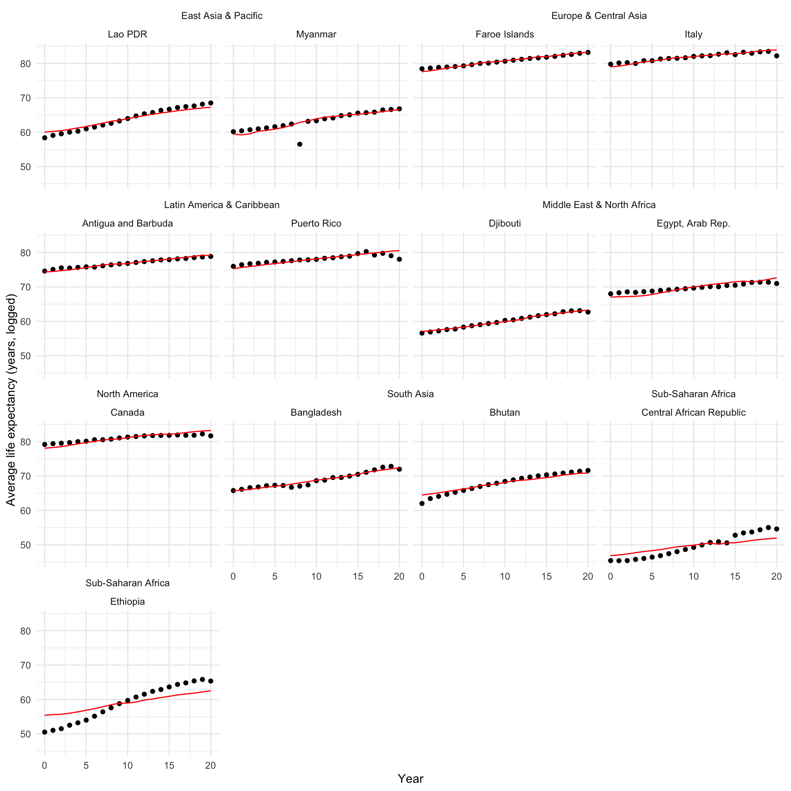
Pretty good! Let’s look at what we gained by accounting for these country-level differences:
augment(m_linear) |>
select(.rownames, life_exp, log_gdp, year, .fitted_linear = .fitted) |>
left_join(
augment(m_multi) |>
select(.rownames, life_exp, log_gdp, year, .fitted_multi = .fitted)
) |>
left_join(
full_df |>
select(country, region, year) |>
rownames_to_column(var = ".rownames")
) |>
filter(country %in% countries) |>
ggplot(aes(x = year)) +
geom_point(aes(y = life_exp)) +
geom_line(aes(y = .fitted_linear), colour = "blue") +
geom_line(aes(y = .fitted_multi), colour = "red") +
ggh4x::facet_nested_wrap(~ region + country) +
theme_minimal() +
labs(x = "Year",
y = "Average life expectancy (years)")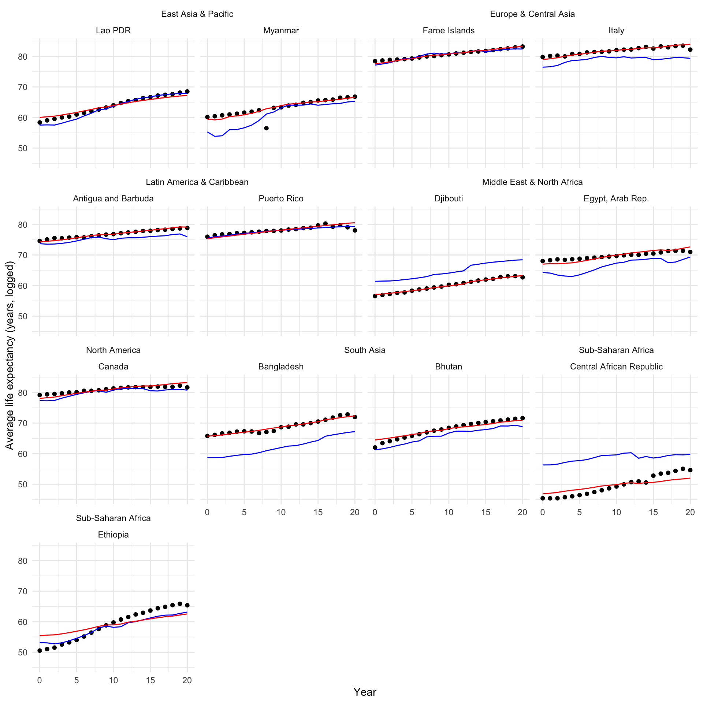
It looks much better across all countries and years!
Further reading
This lab session draws heavily on Andrew Heiss’s brilliant blog post A guide to working with country-year panel data and Bayesian multilevel models (2021).
I also highly recommend Michael Clark’s Mixed Models with R.